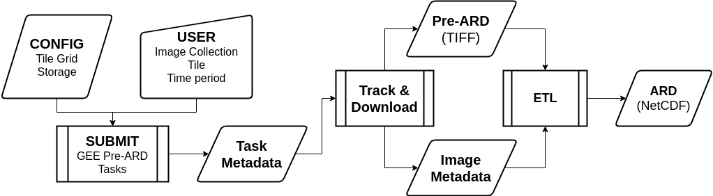

Overview¶
The Google Earth Engine (GEE) has massive computational resources, entire archives of data from many popular satellites, and an API that allows us to run many common image processing tasks [gorelick2017google]. For this reason, the GEE is an excellent resource for finding and preprocessing time series of satellite data to the point where it is “analysis ready”. Data that is “analysis ready” is generally considered to be preprocessed to a minimum set of requirements and organized to facilitate user analysis without much effort ([dwyer2018analysis][lewis2017australian] and CEOS):
In this package, “Analysis Ready Data” (ARD) means:
Preprocessed to a high enough level to be consistent over time (e.g., surface reflectance)
Reprojected or projected into some projection suitable for large scale analysis
Clipped into non-overlapping tiles, usually by combining sensor acquisition “paths” and “rows”. For Landsat data, this also means removal of the “north-south” overlap present in WRS-2 scenes.
Stored in a format suitable for time series analysis (e.g., NetCDF4)
The CEDAR tool has a number of functions to accomplish the first 3 steps on
the GEE for a given sensor image collection. Currently, only
Landsat Collection 1 Surface Reflectance data are supported. These functions
generate “pre-ARD” images (ee.Image) and “image metadata”, which
is required because images exported from the Earth Engine after preprocessing
lose their basic metadata information (sensor, acquisition times, etc). The
CEDAR application also generates “tracking metadata” about the orders it
creates. The “tracking metadata” allows us to download the “pre-ARD” and
“image metadata” at a later point for further processing into ARD.
There are 5 main steps to creating this Analysis Ready Data using CEDAR and the Google Earth Engine (GEE).
Authenticating
Configuration file creation
“Pre-ARD” order submission
Order tracking and download
Conversion of “pre-ARD” and “image metadata” into ARD
References¶
John Dwyer, David Roy, Brian Sauer, Calli Jenkerson, Hankui Zhang, and Leo Lymburner. Analysis ready data: enabling analysis of the landsat archive. Remote Sensing, 10(9):1363, 2018.
Noel Gorelick, Matt Hancher, Mike Dixon, Simon Ilyushchenko, David Thau, and Rebecca Moore. Google earth engine: planetary-scale geospatial analysis for everyone. Remote Sensing of Environment, 202:18–27, 2017.
Adam Lewis, Simon Oliver, Leo Lymburner, Ben Evans, Lesley Wyborn, Norman Mueller, Gregory Raevksi, Jeremy Hooke, Rob Woodcock, Joshua Sixsmith, and others. The australian geoscience data cube—foundations and lessons learned. Remote Sensing of Environment, 202:276–292, 2017.